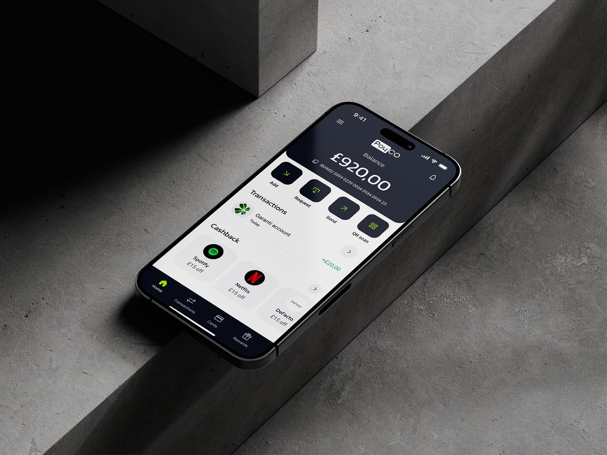
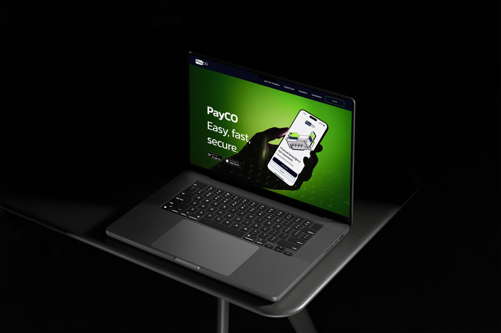
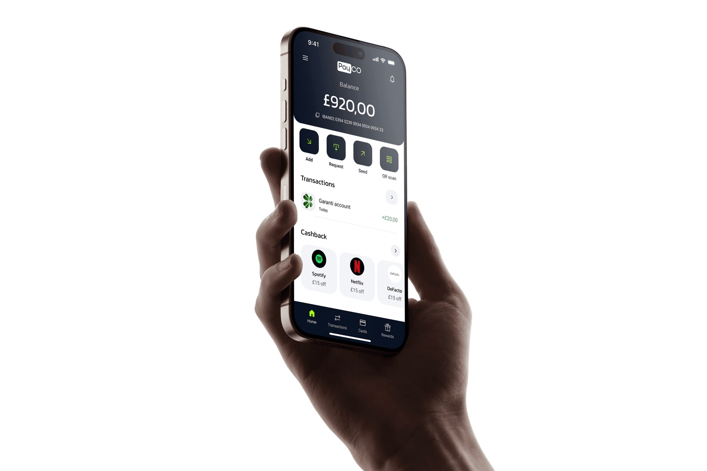
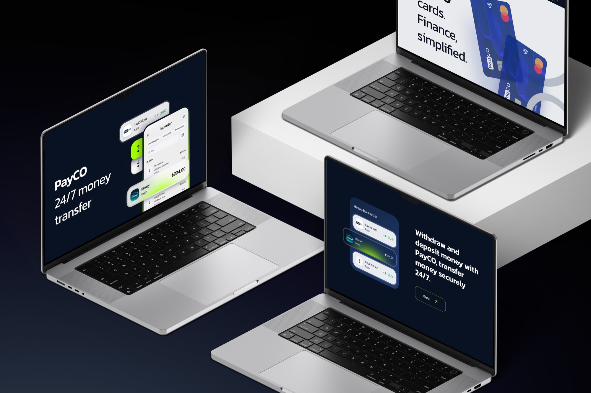
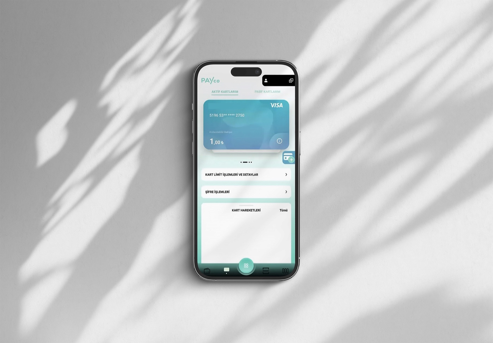
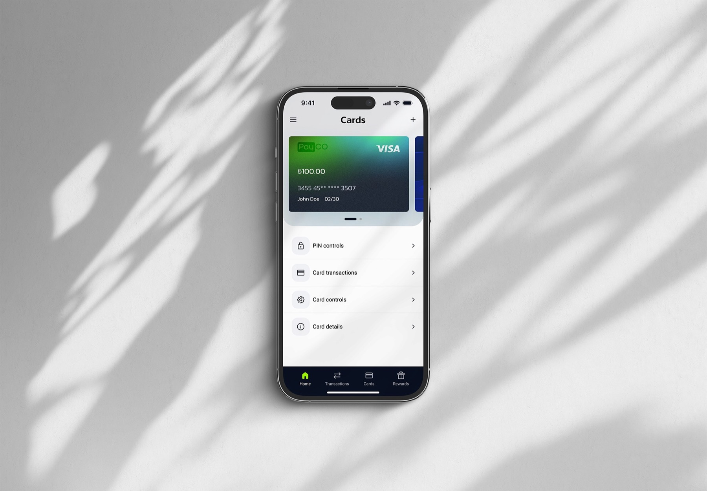
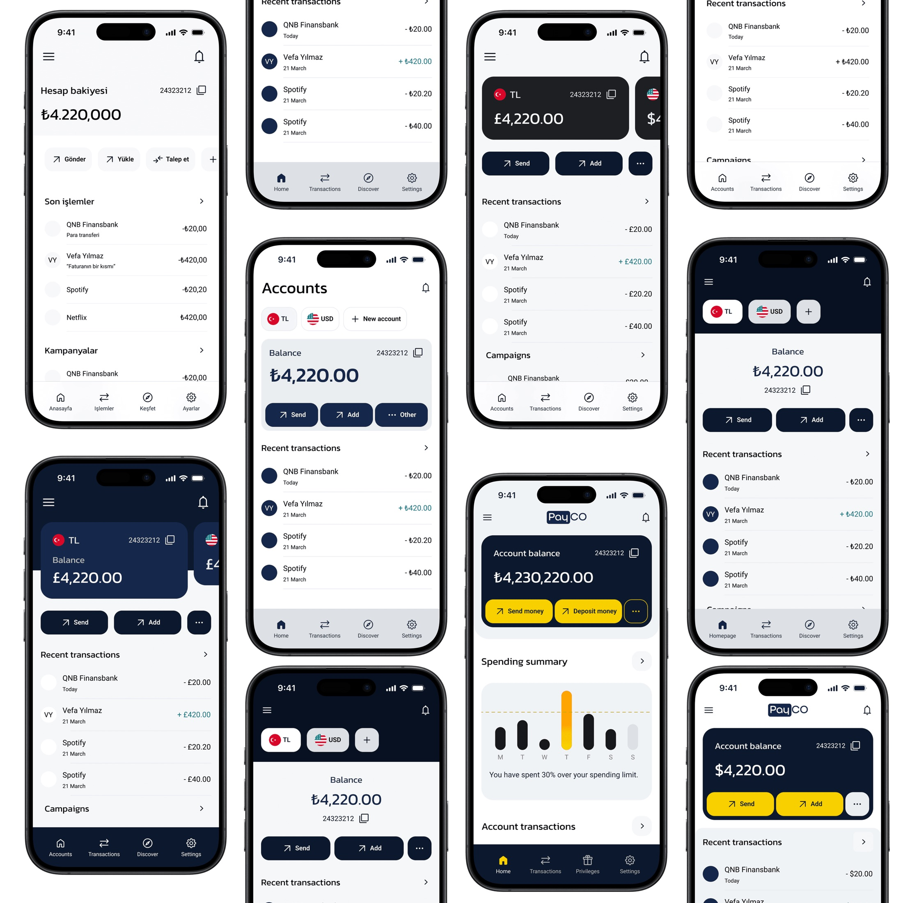
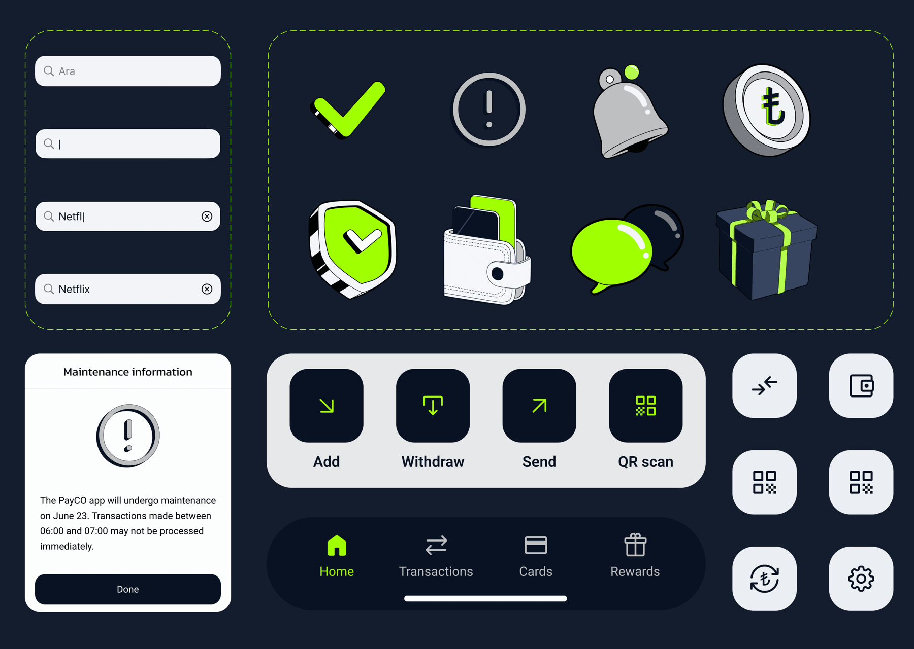
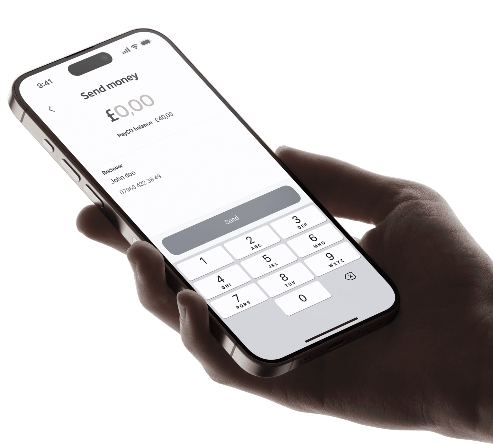
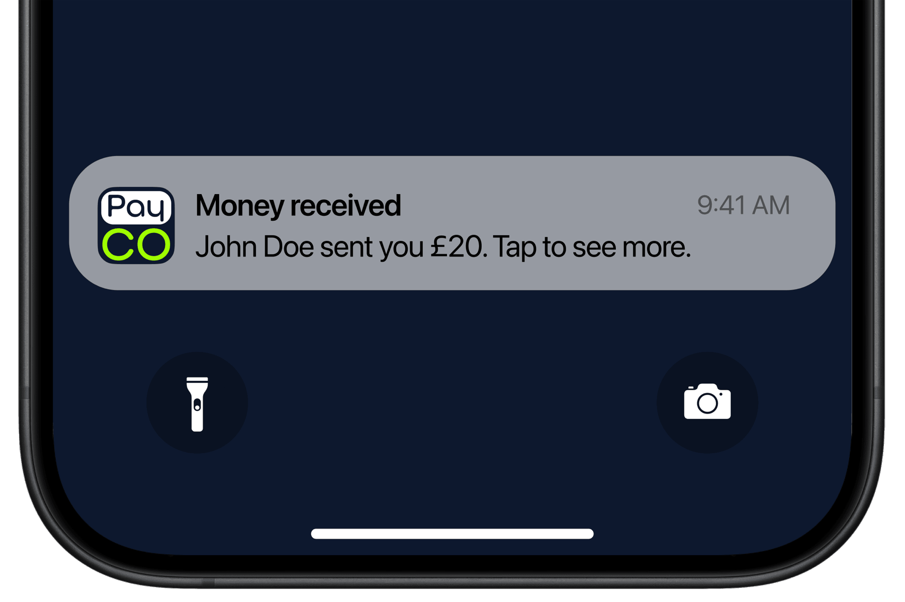

Fintech · App & marketing site
Redesigning PayCO, a fintech wallet — end to end
PayCO helps people manage their everyday money through an intuitive wallet app. I led the redesign of both the app and the marketing website.

Overview
An outdated app, an off-standard site
The app was outdated and needed a fresh look along with a completely redesigned UX to align with current user behaviours and patterns. The marketing website was equally dated — no longer in line with current UX & UI fundamentals. My role was to redesign the UX & UI of both the app and the marketing site.


Process
Reverse-engineering the product
The app was already coded but shipped without any documented flows or screens, so my first task was to reconstruct the journeys from screenshots of the live product. From there I ran internal stakeholder interviews to understand the scope and the problems, mapped the flows, catalogued issues as major or minor, and identified the primary and secondary actions, priorities and requirements that the redesign had to serve.

UX process
A new layout & information architecture
I designed multiple iterations, taking the flows, requirements and limitations to the team for feedback every week, suggesting additional use cases and improvements along the way. The result was a renewed layout and information architecture — toggle below to compare the existing app with the redesign.



UI scope
Crafting the UI & design system
The UI was crafted around the established look and feel: a minimalist design with a clean off-white background, subtle grey sections and clear, well-defined divisions. I created the app illustrations, built the design system and styleguide, and led the visual direction for both the app and the website — with colours subtly adjusted to land the right feel.

Optimised flows
Single-tap key actions
New flows were optimised for both platforms, keeping the important actions — like sending money — front and centre, with motion and animation aligned to each platform's guidelines.

Brand identity
A refreshed PayCO mark
The brand identity was updated alongside the product — a stacked "Pay / CO" mark in navy and lime that reads clearly at app-icon scale, in push notifications and across the marketing site.

Result
A completely new app
A renewed information architecture and flows, a new brand identity, a complete design system, a set of illustrations for features, warnings, success and error states, and new animations and app motion design aligned with iOS and Android guidelines.